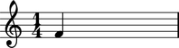

Working with notes
Creating notes
Create notes with numeric pitch and duration indicators.
abjad> note = Note(0, (1, 4))

Changing note duration
You can assign values directly to the note duration interface.
abjad> note.duration = (1, 8)

You can use any duration token on the right-hand side of such an assignment.
Duration comparisons
Compare note durations with Python's equality operator.
abjad> Note(0, (1, 8)) == Note(0, (3, 8)) False
Greater than, less than and the other comparison operators work as expected.
abjad> Note(0, (1, 8)) < Note(0, (3, 8)) True
You can do all the normal things with the note duration interface that you can do with the other Abjad duration interfaces. These include copying and rewriting.
Working with note pitch
You can assign pitches to a note a note in a couple of different ways.
abjad> note.pitch = 1 abjad> note Note(cs', 4)
abjad> note.pitch = Pitch('d', 4)
abjad> note
Note(d', 4)
abjad> note.pitch = ('ds', 4)
abjad> note
Note(ds', 4)
Creating rests
The Abjad Rest initializes with a duration value only.
abjad> rest = Rest((1, 4)) abjad> rest Rest(4) abjad> show(rest)

Rest-specific attributes
In addition to the attributes inherited from the _Leaf class (such as duration, grace, etc.), the Rest class also possesses a pitch attribute.
This may seem strange given that rests represent the absence of sound.
However, as a glyph in a score, rests also necessarily have a vertical position relative to the staff.
By default the vertical position of rests is set automatically by the LilyPond renderer, but it can be set arbitrarily with the pitch attribute.
abjad> rest = Rest((1, 4)) abjad> rest.pitch = -1 abjad> show(rest)
Notice how the position of the rest is here moved down so it falls exactly on B3.
To remove the pitch from a Rest simply set the attribute to None.
abjad> rest.pitch = None
To do
Add casting.